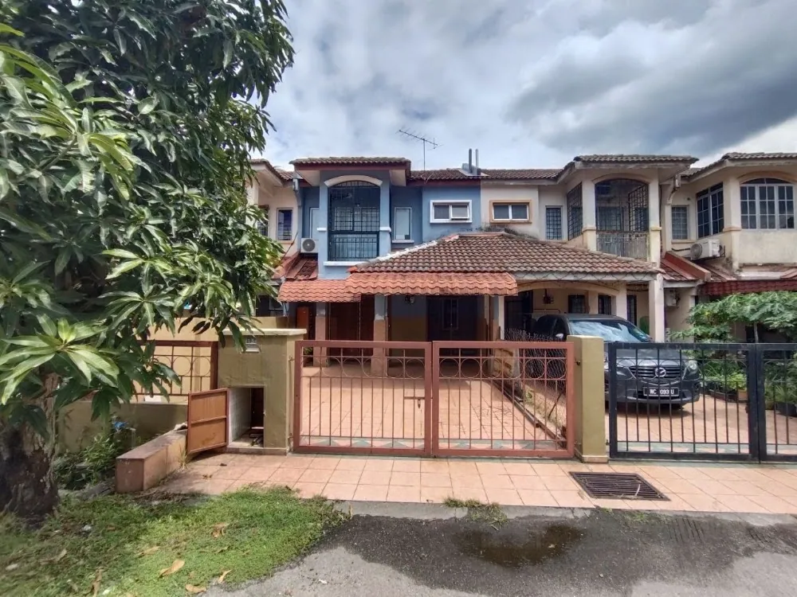
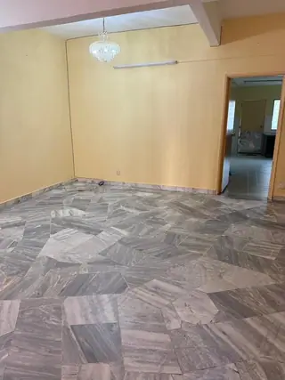
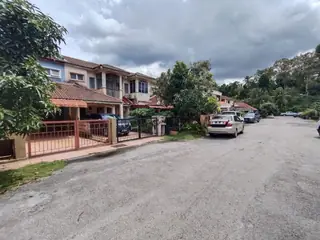
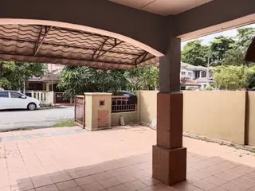
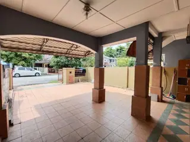
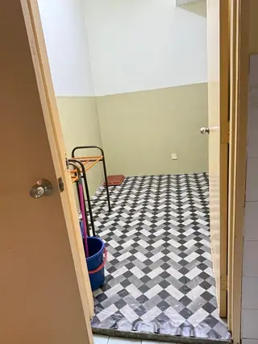
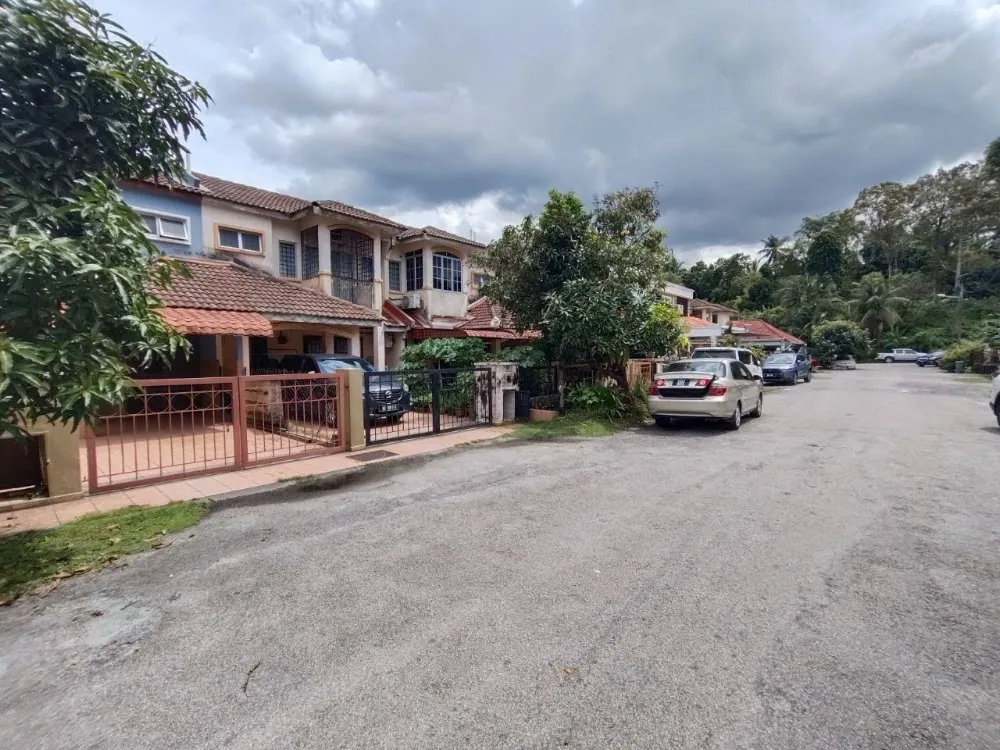

Rumah teres 2 tingkat yang telah direfurbish di Seksyen 4 Tambahan, Bangi — VACANT dan boleh masuk terus! Unit basic (4 bilik, 3 bilik air) dengan keluasan tanah 20x70 dan binaan 1,580 sqft, status Leasehold Bumi. Lokasi strategik berdekatan kedai makan, surau Al Ikhlas, pusat kesihatan dan sekolah — mudah akses ke Bangi Gateway, UKM, NIOSH, GMI dan KPTM. Sesuai untuk keluarga atau pelaburan sewa. Untuk maklumat lanjut atau tempahan viewing, hubungi Zahir MJ (012-2310119).
| Jenis hartanah | Rumah Teres |
|---|---|
| Hakmilik (tenure) | Leasehold |
| Luas tanah | 20 x 70 sqft |
| Luas binaan | 1,580 sqft |
| Bilik tidur / bilik air | 4 bilik · 3 bilik air |
| Harga per kaki persegi | RM—/sqft |
| Sekatan | — |
| Status | BARU |

Seksyen 4 Tambahan, Bangi, SelangorBoleh — pilih tarikh pada borang di kanan, kami akan konfirmasi melalui WhatsApp.
Harga dan syarat dirunding terus dengan pemilik melalui ejen. Hubungi kami untuk maklumat terkini.
Kami boleh cadangkan panel bank dan peguam, tetapi anda bebas memilih.
Isi maklumat ringkas — kami akan WhatsApp anda untuk tetapkan tarikh.
Mock-up: borang belum disambung. Fasa 2 akan hantar ke Google Sheet + notifikasi WhatsApp.